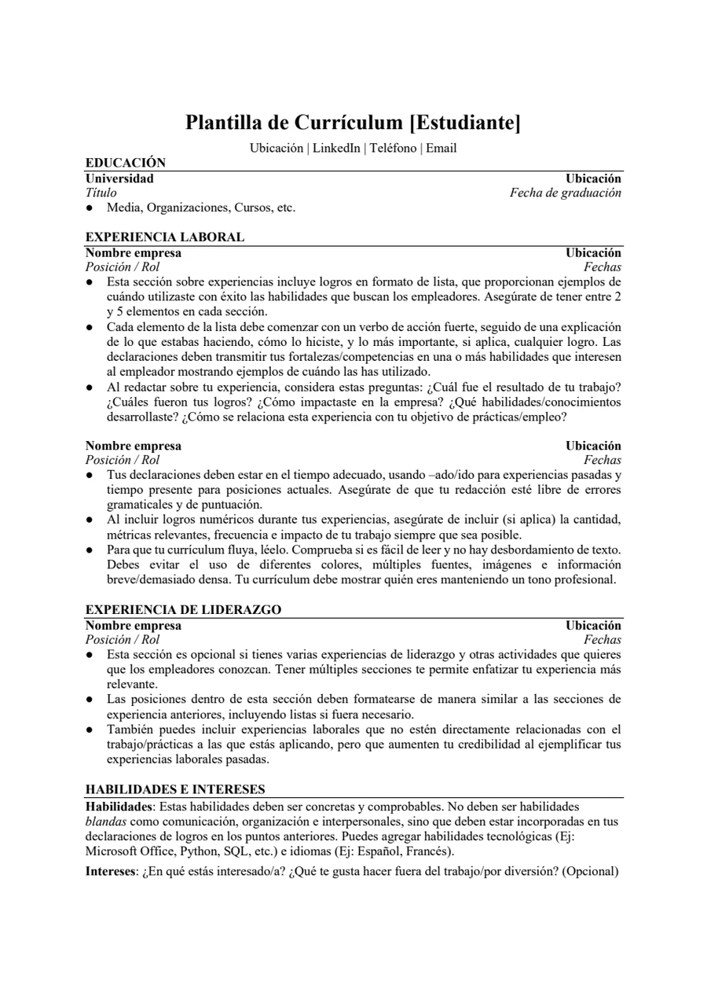
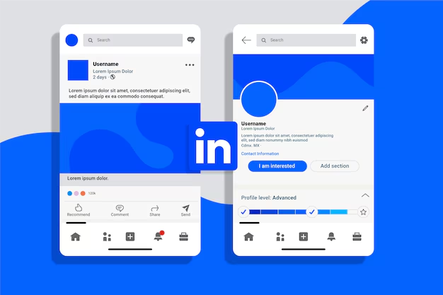

02 Prepara tu candidatura
Transforma una oferta de tu lista en un CV, una carta y un perfil coherentes. El resultado debe mostrar lo que has hecho y por qué encajas en ese puesto.
Construye un CV que puedas defender
Elige una oferta del módulo 01 y señala sus requisitos. Prepara un CV base de una página, legible y en orden cronológico inverso dentro de cada sección. Si aún tienes poca experiencia, empieza por educación e incluye proyectos, trabajo de estudiante, voluntariado y responsabilidades en clubes.
- Encabezado: nombre, ciudad, teléfono, correo profesional y LinkedIn. Evita datos que no aporten a la candidatura, como DNI, estado civil o domicilio completo.
- Educación: grado, universidad y fecha prevista de graduación; añade nota, asignaturas o proyectos cuando sean relevantes. No conviertas tu nota a otro sistema sin una equivalencia justificada.
- Experiencia y liderazgo: entidad, función, lugar y fechas. Usa dos o tres logros relevantes por experiencia y explica tu contribución.
- Competencias: idiomas con nivel real y herramientas que sepas utilizar. Demuestra habilidades de trabajo en equipo con ejemplos, en vez de limitarte a enumerarlas.
Las plantillas del material del club incluyen versiones de estudiante y de profesional. Conserva la que te corresponda, sustituye las instrucciones y elimina las secciones vacías. No envíes el archivo con ambas versiones.
Adapta el idioma y formato a lo que pida la oferta. Prioriza una estructura sencilla sin gráficos ni tablas complejas; comprueba el texto que extrae el formulario de la empresa. Envía PDF o DOCX según sus instrucciones y abre el archivo final antes de adjuntarlo.
Para una candidatura internacional
Usa inglés o la lengua que indique la oferta y revisa la traducción de tu titulación, la fecha prevista de graduación y el nivel de idiomas. En el formulario o la carta, explica con precisión tu disponibilidad y ubicación cuando se soliciten; no prometas una incorporación que aún deba validar CUNEF.
Prepara una carta breve adaptable y comprueba los requisitos de trabajo del destino. Si una pregunta sobre elegibilidad no está clara, consúltala antes de responder. Puedes solicitar orientación al servicio de carreras para revisar materiales y proceso.


Convierte tareas en evidencias
Usa esta estructura: verbo de acción + qué hiciste + cómo + resultado comprobable. Si no conoces el impacto económico, cuantifica el alcance: empresas analizadas, sesiones organizadas, fuentes revisadas o frecuencia de entrega. Identifica las estimaciones y no atribuyas causalidad que no puedas demostrar.
Ejemplo original y ficticio: «Analicé 12 compañías europeas con múltiplos EV/EBITDA y resumí las diferencias de crecimiento y deuda en una presentación para una sesión del club».
Cómo revisarlo: «Analicé» describe la acción; «12 compañías» da escala; «EV/EBITDA» concreta el método; «presentación para una sesión» identifica el entregable. Explica qué parte hiciste tú y comprueba que puedes reproducir el análisis.
El ejemplo de CV comentado del material de referencia distingue verbos, habilidades técnicas, métricas y resultados. Aplica esa revisión a tu CV: subraya cada elemento durante la edición y retira el código de colores antes de enviarlo.
Verbos útiles en español e inglés
Elige el verbo que describa tu trabajo real. Esta selección revisa las traducciones del listado antiguo; por ejemplo, authored significa «redacté», no «autoricé».
| Acción | Español | Inglés |
|---|---|---|
| Análisis | Analicé, evalué, comparé | Analyzed, evaluated, compared |
| Modelización | Modelicé, proyecté, concilié | Modeled, forecasted, reconciled |
| Comunicación | Redacté, presenté, sinteticé | Authored, presented, synthesized |
| Ejecución | Coordiné, implementé, mejoré | Coordinated, implemented, improved |
Qué aprender de los CV de Wharton
La recopilación histórica del club contiene 355 páginas de CV de MBA, principalmente de la promoción de 2003, con datos personales y experiencia previa. Sirve para observar la organización de educación, experiencia y logros; sus perfiles no son la referencia de experiencia exigible a un estudiante de grado.
Escribe tu carta de motivación
Cuando el proceso la pida o permita, prepara tres o cuatro párrafos y respeta el límite de palabras del formulario. En un documento adjunto, intenta no superar una página.
- Presentación: identifica puesto y oficina y explica por qué te interesa esa función.
- Por qué esa firma: conecta un área, operación o enfoque que hayas investigado con tus intereses. Verifica el dato en una fuente de la empresa.
- Qué aportas: desarrolla uno o dos ejemplos del CV que respondan a requisitos de la oferta.
- Cierre: agradece la consideración y muestra disponibilidad para el proceso.
Punto de partida para personalizar: «En [proyecto real] analicé [problema] mediante [método] y elaboré [entregable]. Esta experiencia me llevó a interesarme por [función concreta] de [equipo], sobre la que he investigado [fuente o ejemplo verificable]».
Comprueba empresa, puesto y destinatario. Evita repetir todo el CV o afirmar motivaciones que no puedas explicar. Si usas IA para revisar claridad o gramática, verifica cada dato y conserva tu voz.
Pide una recomendación con contexto
Prepara referencias cuando las solicite el proceso. Elige a un profesor o responsable que haya observado tu trabajo y pregúntale con antelación si puede recomendarte. Facilita CV, descripción del programa, plazo y dos ejemplos reales de trabajo compartido.
Modelo de solicitud para adaptar
Asunto: Solicitud de recomendación para [programa o puesto]
Hola [nombre]:
Estoy preparando mi candidatura a [puesto/programa y entidad]. Como trabajamos juntos en [asignatura o proyecto], quería preguntarte si te sentirías cómodo/a escribiendo una recomendación sobre mi trabajo.
El proceso pide [formato, idioma y forma de envío] antes del [fecha y zona horaria]. Adjunto mi CV y la descripción. Como contexto, en [proyecto] me encargué de [aportación verificable]. Puedo facilitarte más información si te resulta útil.
Entiendo si no tienes disponibilidad. Muchas gracias por considerarlo.
[Tu nombre]
Confirma si el recomendador debe enviar la carta directamente. Respeta su autoría, no compartas sus datos sin permiso y agradece su tiempo. No adjuntes referencias a todos los CV por defecto.
Actualiza y cuida tu visibilidad
Alinea fechas, educación y experiencia con tu CV. Usa un titular específico y honesto, por ejemplo «Estudiante de [grado] en CUNEF | Interés en análisis de renta variable». En «Acerca de», resume qué estudias, un proyecto que puedas explicar y qué quieres aprender.
- Revisa foto, información de contacto y URL del perfil. Comparte proyectos propios que no contengan información confidencial.
- Describe experiencias con logros y competencias relevantes para las ofertas elegidas.
- Configura alertas por función y ubicación; revisa sus resultados en tu registro del módulo 01.
- Si decides usar Open to Work, elige la audiencia con cuidado. La opción «solo técnicos de selección» no garantiza privacidad completa.
- Contacta con alumni con un mensaje breve: quién eres, por qué les escribes y una pregunta concreta sobre su trabajo. No envíes solicitudes genéricas de empleo en masa.

